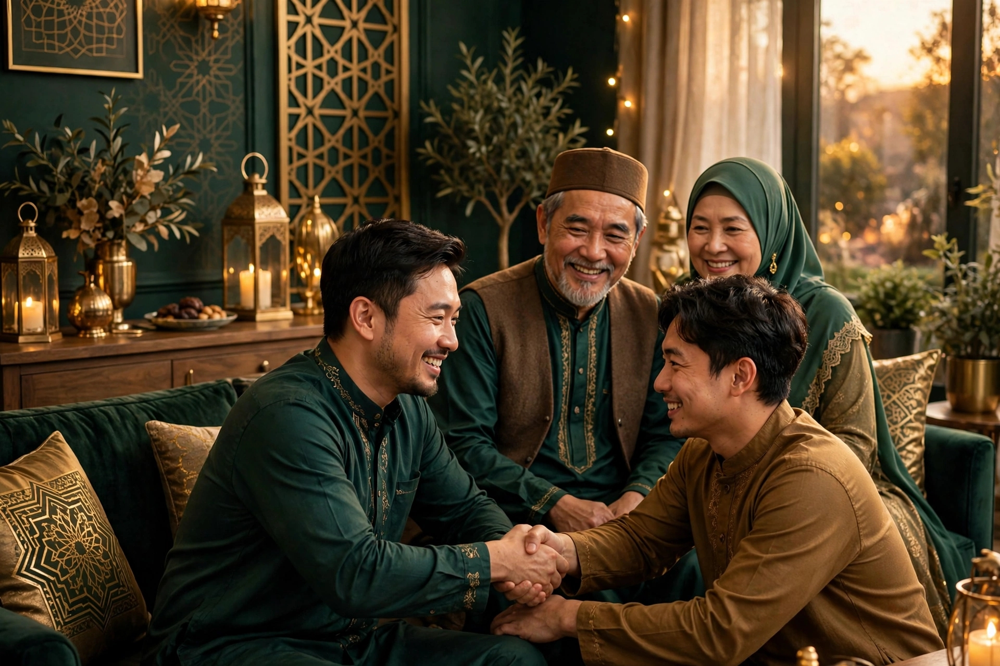

7 PINTU KETENANGAN1 / 10
PEMBUKAAssalamualaikum, Saya Deka Sonjaya
Bukan kurang uang, tapi kurang tenang. Uang ada, tapi hati gelisah. Rezeki datang, tapi cepat habis karena hati tidak pernah puas.
DOA: Semoga yang mendengarkan ini, hatinya ditenangkan, rezekinya dilapangkan, dan urusannya dimudahkan oleh Allah. Aamiin.
Audio Pembuka
← Geser kiri / kanan → • Audio habis = pindah otomatis
7 PINTU KETENANGAN2 / 10
PINTU 01 — ISTIGHFARIstighfar
QS. Nuh: 10-12 — "Mohonlah ampun kepada Tuhanmu, niscaya Dia akan mengirimkan hujan kepadamu dengan lebat, dan memperbanyak harta dan anak-anakmu."
AMALAN: Setelah sholat, Astaghfirullah 100x pelan-pelan, tanpa pegang HP dulu.
Audio Pintu 1
← Geser kiri / kanan → • Audio habis = pindah otomatis

7 PINTU KETENANGAN3 / 10
PINTU 02 — SYUKURSyukur
QS. Ibrahim: 7 — "Jika kamu bersyukur, pasti Aku akan menambah (nikmat) kepadamu."
AMALAN: Tiap malam, tulis 3 hal yang kamu syukuri hari ini.
Audio Pintu 2
← Geser kiri / kanan → • Audio habis = pindah otomatis
7 PINTU KETENANGAN4 / 10
PINTU 03 — SABARSabar
QS. Al-Baqarah: 153 — "Jadikanlah sabar dan sholat sebagai penolongmu. Sesungguhnya Allah bersama orang-orang yang sabar."
AMALAN: Emosi naik? Jangan balas chat dulu. Wudhu dulu, sholat 2 rakaat dulu.
Audio Pintu 3
← Geser kiri / kanan → • Audio habis = pindah otomatis

7 PINTU KETENANGAN5 / 10
PINTU 04 — SEDEKAHSedekah
QS. Al-Baqarah: 261 — "Perumpamaan orang yang menginfakkan hartanya seperti sebutir biji yang menumbuhkan tujuh tangkai."
AMALAN: Mulai Rp 2.000 tiap subuh. Yang penting rutin.
Audio Pintu 4
← Geser kiri / kanan → • Audio habis = pindah otomatis

7 PINTU KETENANGAN6 / 10
PINTU 05 — SILATURAHMISilaturahmi
HR. Bukhari Muslim — "Barangsiapa ingin dilapangkan rezekinya dan dipanjangkan umurnya, hendaklah ia menyambung silaturahmi."
AMALAN: Minggu ini chat 1 orang yang lama tidak kamu sapa. Cuma tanya kabar.
Audio Pintu 5
← Geser kiri / kanan → • Audio habis = pindah otomatis

7 PINTU KETENANGAN7 / 10
PINTU 06 — SHOLAT TEPAT WAKTUSholat Tepat Waktu
QS. An-Nisa: 103 — "Sesungguhnya sholat itu adalah kewajiban yang ditentukan waktunya."
AMALAN: 1 minggu ini, adzan langsung berhenti. Tidak ditawar.
Audio Pintu 6
← Geser kiri / kanan → • Audio habis = pindah otomatis
7 PINTU KETENANGAN8 / 10
PINTU 07 — TAWAKKALTawakkal
QS. At-Talaq: 3 — "Barangsiapa bertawakkal kepada Allah, niscaya Allah akan mencukupkan (keperluan)nya."
AMALAN: "Ya Allah, saya sudah usaha, sisanya saya titipkan kepada-Mu."
Audio Pintu 7
← Geser kiri / kanan → • Audio habis = pindah otomatis

7 PINTU KETENANGAN9 / 10
AMALAN HARIANChecklist Hari Ini
Audio Checklist

7 PINTU KETENANGAN10 / 10
PENUTUPPilih 1 Pintu Dulu
Kalau hati sudah tenang, rezeki akan datang dengan sendirinya. Karena rezeki suka dengan hati yang tenang, bukan hati yang gelisah.
TERIMA KASIH: Terima kasih sudah mendengarkan sampai akhir. Saya Deka Sonjaya, mohon maaf kalau ada salah kata. Semoga bermanfaat dan menjadi jalan hati kita kembali tenang. Aamiin.
Wassalamualaikum warahmatullahi wabarakatuh.
Wassalamualaikum warahmatullahi wabarakatuh.
Audio Penutup